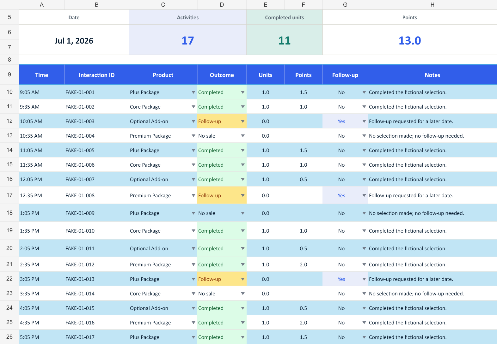
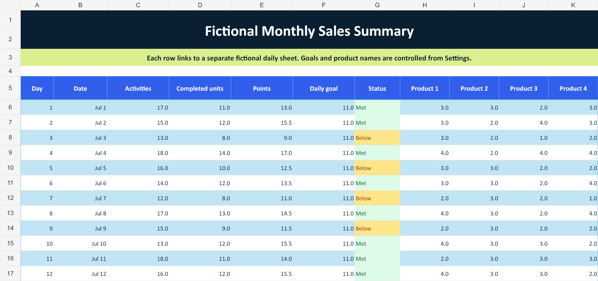

324 completed units ÷ 310 combined product-goal units.
The reporting question
Which target are we measuring against?
The workbook has independently editable monthly product goals and a daily completed-unit target. These answer different questions and should not be treated as equivalent goals.
Days with at least 11 completed units; 17 days were below that threshold.
The daily target implies 341 units over 31 days (11 × 31), compared with 310 units in the monthly product goals. Against that 341-unit benchmark, the same 324 units represent 95.0% attainment. The target difference helps explain the contrast; it does not by itself establish a performance problem.
- 465
- Activities
- 324
- Completed units
- 402.5
- Points
Workbook architecture
Four connected layers separate assumptions, entry, calculation, and review.
Settings
Centralizes fictional product labels, monthly goals, daily targets, target days, and point values.
One assumption layerDay 01–31
Uses a consistent table, validated fields, daily KPI cards, product totals, and Met/Below status.
620-row log capacityMonthly Summary
Consolidates each day into an 11-column table and reconciles actuals with goals.
No monthly copy-and-pasteDashboard
Shows four KPI cards, daily actual-versus-goal results, product comparisons, and goal-status counts.
Two decision viewsSettings → daily controls → monthly rollup → dashboard. The separation makes assumptions visible, inputs consistent, and totals traceable back to a specific day.
Follow one day through the workbook
From individual records to a monthly view.
These excerpts show the original downloadable workbook, using fictional July 2026 records.
1. Enter the daily activity
On Day 01, each row records a product, outcome, units, and follow-up status. The daily formulas total 17 activities, 11 completed units, and 13 points. The 10:05 AM follow-up remains visible but contributes no completed units.

2. Check the monthly rollup
The first row of Monthly Summary links to Day 01 and carries across the same 17 activities, 11 units, and 13 points. Its 11-unit result meets the daily target. Day 03, at 8 units, is marked Below so the exception is visible alongside the totals.

3. Review the whole month. The dashboard below combines all 31 days. Monthly product goals total 310 units, while the separate daily target totals 341 units (11 × 31). The same 324 completed units exceed the first target and fall short of the second, so the goal definition belongs beside the result.
Decision view
The dashboard answers three different review questions.
- 01Which days missed the daily target?
The line chart and status count show 14 days at or above 11 units and 17 below.
- 02Which products are driving variance?
All four finished above goal; Optional Add-on had the largest positive variance at +6 units, or 108.1% attainment.
- 03Do the totals reconcile?
Product units sum to 324, matching completed units, while product points sum to 402.5.

Design decisions
How the workbook controls support review.
Settings hold assumptions; daily tables hold records; formulas consolidate the results.
| Decision | Workbook implementation | Why it matters |
|---|---|---|
| Centralize assumptions | Editable product names, goals, target days, and point values live on Settings. | A reviewer can change inputs once and see connected calculations respond. |
| Standardize daily entry | Thirty-one matching tables use validation for product, outcome, follow-up, and units. | Consistent fields reduce ambiguous records and support reliable rollups. |
| Separate aggregation | Monthly Summary links one row to each day before the Dashboard reads the totals. | The reporting layer stays reviewable without changing source entries. |
| Surface exceptions | IF, IFERROR, SUMIF, COUNTIF, and conditional formatting calculate status, attainment, totals, and exception counts. | Below-goal days and follow-up activity are easier to find. |
| Document the handoff | A Read Me sheet explains workflow, editable cells, and privacy boundaries. | The file can be understood without relying on its original builder. |
Validation and QA
The source rows match the dashboard totals.
- 01
Unit reconciliation Four product totals sum to 324, matching completed units.
- 02
Point reconciliation Product-level points sum to the 402.5 dashboard total.
- 03
Status reconciliation 14 Met plus 17 Below accounts for all 31 days.
- 04
Follow-up consistency 95 Follow-up outcomes match 95 Yes flags. Sample notes agree with each row's outcome and flag.
Recommendation
Confirm the goals before explaining the shortfall.
First, confirm whether the monthly product goals and daily target are meant to differ. Then compare activity volume and completed units on below-target days before proposing a process change.
This fictional sample can demonstrate those checks, but it cannot establish causes such as staffing, demand, or employee performance. A real review would need that operating context.
Inspect the work
Review the formulas, controls, and fictional source rows yourself.
Cross-sheet formulasSUMIF & COUNTIFExcel tablesData validationConditional formattingGoal analysisDashboard reportingProcess documentation
Contact
Contact Jonathan.
I'm open to business analysis, reporting, operations, and business systems opportunities.